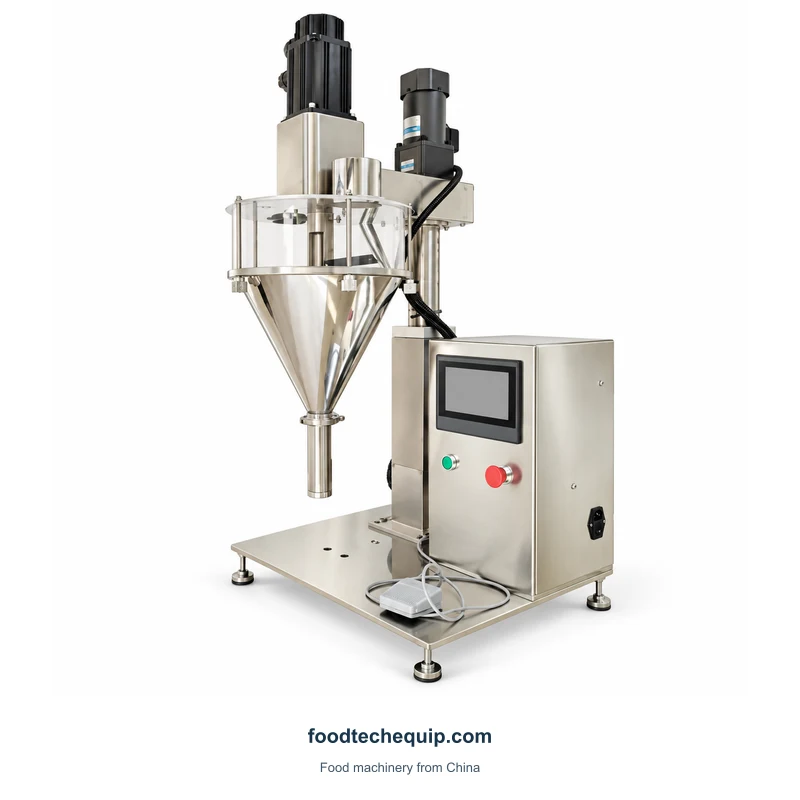

귀하의 적용 분야로 시작하십시오
공정에 맞는 장비 찾기
장비 문의를 형성하는 재료, 포장 및 취급 세부 사항을 살펴보십시오. 작업부터 시작한 다음 관련 레이아웃을 비교합니다.

제품을 포장
식품 자루 및 밀봉
백 포맷, 필름 재료 및 제품 상태가 포장 요구 사항을 정의하는 데 도움이 됩니다. 의도한 패키지에 대한 사용 가능한 구성을 논의하십시오.
소포장 방식 보기 ↗



배송 패키지에 카톤
판지 폐쇄 및 배송 처리
포장된 상자의 치수, 테이프 부착 위치, 상자 규격 변경 순서를 알려 주세요. 밴딩이나 인쇄가 필요하면 각 공정과 이송 방법을 구분해 설명해 주세요.
판지 밀봉 ↗


패키지 & 프로세스
곡물 포션 & 사크
부피식 컵 정량 공급과 별도의 중량식 공급 방식을 비교합니다. 롤 필름으로 봉투를 성형할지 기성 봉투를 사용할지 알려 주세요.
소포장 방식 보기 ↗


애플리케이션을 장비 브리핑으로 전환합니다.
재료의 상태, 완성된 포장 및 처리되는 방법을 보여줍니다. 의도한 포장 크기에 필요한 출력과 로딩 및 컬렉션 순서를 포함하십시오.
장비 문의 준비하기 ↗대화를 시작하세요
요구 사항 상담 용도에 맞는 설비 찾기
제품과 포장 방식, 목표 처리량을 알려 주세요.